- 00 开篇词｜抛开争论，先来看看真正的低代码.md.html
- 01｜低代码平台到底是什么样的？.md.html
- 02｜低代码到底是银弹，还是行业毒瘤？.md.html
- 03｜低代码的天花板：一个完备的低代码平台应该具备哪些条件？.md.html
- 04｜演进策略：先发展通用能力还是先满足业务需求？.md.html
- 05｜基础设施 ：启动低代码平台研发之前，你需要有什么家底？.md.html
- 06｜踏出新手村便遭遇大Boss：如何架构低代码的引擎？.md.html
- 07｜结构化代码生成法：代码如何生成代码？.md.html
- 08｜布局编辑器：如何做到鱼和熊掌兼得？.md.html
- 09｜属性编辑器：如何解除Web组件属性与编辑器的耦合？.md.html
- 10 可视化编程：如何有效降低App前后端逻辑开发的技能门槛？.md.html
- 11｜亦敌亦友：Low Code与Pro Code混合使用怎样实现？.md.html
- 12 业务数据：再好的App，没有数据也是白搭.md.html
- 13｜多人协同编辑：野百合的春天为啥来得这么晚？.md.html
- 14｜编辑历史：是对Git做改造，还是另辟蹊径？.md.html
- 15｜低代码平台应该优先覆盖应用研发生命周期中的哪些功能？.md.html
- 16｜扩展与定制：如何实现插件系统并形成生态圈？.md.html
- 17｜兼容性问题：如何有效发现兼容性问题？.md.html
- 18｜兼容性问题：如何有效解决兼容性问题？.md.html
- 总结与展望｜低代码之路，我们才刚刚开始.md.html
- 捐赠
18｜兼容性问题：如何有效解决兼容性问题？
上一讲我们提到，在软件的演进过程中，特别是在低代码平台这样的庞大软件工程中，兼容性问题，也就是破坏性变更是无法避免的。只要软件的代码有改动，就有可能引入破坏性，因此破坏性变更与软件的演进之间如影随形、不可分割。
破坏性变更所造成的后果，有可能微乎其微，也有可能是致命的。会造成严重后果的破坏性变更往往会受到重点“照顾”从而被妥善解决，那些没那么大破坏力的破坏性变更，一旦泄露到线上，不仅会造成体验问题，还有可能造成小范围功能不可用。
这一讲我们就承接上一讲的内容，重点讲讲如何妥善处理兼容性问题。当然，发现破坏性变更是解决它的第一步，具体我已经在上一讲中详细介绍了，所以我建议你在继续这一讲的学习之前，先回顾一下上一讲的内容。在讲具体如何解决之前，我们先来分析下低代码平台中一般会有哪些类型的破坏性变更。
有哪些类型的破坏性变更？
Schema 数据结构的变更是低代码平台演进过程中最常见的破坏性变更。
我们都知道，低代码平台往往会采用结构化的数据来保存开发者在平台上所作的配置，这些配置数据就是 Schema 数据。Schema 的数据结构往往是随着低代码平台的功能迭代同步发生变化的，典型如某个字段一开始只要一个简单值类型就够用，后来扩展为一个包含多个属性的对象以适应日益复杂的功能；又如从一个单值扩展为一个数组，或者反之，从一个数组简化为一个单值；再如多个复杂字段的各个属性的拆分与再组合。
总之，Schema 数据结构的变更中，基本上除了新增属性外的任何修改都大概率会引入破坏性。根据我长期迭代的经验来说，Schema 数据结构的变更大约贡献了 50% 破坏性问题。并且，这个比例在低代码平台功能建设初期会更高，随着低代码平台的成熟度的增加而逐渐下降。
除此之外，我们再来看看常见的模版文件更新。作为一个开发平台，在生成一些程式化内容的时候，使用模板文件进行替换是一个常用手段，比如下面是一个简单的 index.html 文件的模板：
<!DOCTYPE html>
<html>
<head>
<title>${title}</title>
<script type="text/javascript" src="${scriptHref}"></script>
<link rel="stylesheet" type="text/css" href="${cssHref}">
</head>
<body>
${someContent}
</body>
</html>
可以看到，模板里有一些 {scriptHref}等格式的文本，这些就是占位符。这个模板通常是这样使用的：处理程序或将它读入到内存中，并使用直接替换的方式，将所有的占位符替换为实际值，然后将替换后的内容写入到指定位置去，这个过程简称为模板的实例化。注意，实例化过程，模板原件不会被修改。
但是随着低代码平台的演进，模板的内容难免要更新，此时问题就来了：在模板更新前就已经实例化所得的文件内容是不会更新的。也就是说，已被实例化出来的文件不能用了，需要强制对齐。所以，模板文件的更新，也会引入破坏性。根据我的经验，这个类型的破坏性大概占 20%。
不过这些都是平台内部的破坏性，那平台外部导致的破坏性会有哪些呢？
显然，现代的软件底层都是由一堆第三方软件堆起来的，低代码平台也是如此。任何第三方库的升级，特别是跨大版本升级，都有可能引入破坏性，比如从 Vue2 升级到 Vue3，或者从 Angular8.x 升级到 Angular10.x 等。低代码平台所用的组件集如果有破坏性变更，基本上都会直接传递给应用工程。
与前端第三方库升级会带来破坏性一样，服务端 API 的演进也会带来破坏性。而且由于这些 API 往往是兄弟单位内部自研，相比开源库来说，自研功能在兼容性方面的考虑和投入会少很多，甚至完全不考虑兼容性，在上线前能够想起来发一个强制对齐说明邮件就算做得很到位了。
这些外部环境或依赖所引入的破坏性变更大概占了 20%。总体来说，低代码平台内部演进所产生破坏性变更占了绝大多数。
if else 方案
在上一讲以及这一讲的前面部分，我们完成了解决破坏性的第一步：了解和发现它们，接下来要做的就是解决它们了。低代码平台迭代的过程，任何修改都有可能引入破坏性，一个最容易想到的办法是大量使用 if else。
我们先来看下图，这是一个没有任何破坏性的低代码平台的迭代过程，相当丝滑：
当发生了第一个破坏性（记为 A）的时候，这根直线就会产生一个分叉：
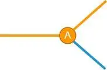
那么，这个分叉点当前输入的数据是来自破坏性发生之前，还是在破坏性发生之后呢？显然不同情况下对数据处理方法是不同的（哪怕是细微的）。识别起来很简单，伪代码大概是这样的：
if (before(A)) {
...
} else {
...
}
这里的 before(A) 是用来判断数据是否来自破坏性变更之前的，需要根据破坏性 A 的特征来编写 before(A) 的逻辑。一般来说，多数破坏性都有显著的特征，因此它的实现难度不大。为了叙述方便，橙色线条表示破坏性发生之后，而蓝色线条表示破坏性发生之前，以下都采用这个规则。
接下来继续迭代，我们又引入了一个新的破坏性变更，记为 B，此时又会出现一个分叉：
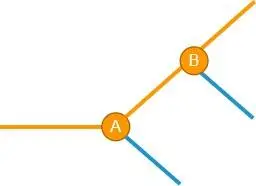
这时情况变得复杂了一些，但看起来，再加一个 if else 还是可以搞得定。接下来再发生新的破坏性 C，也一样处理：
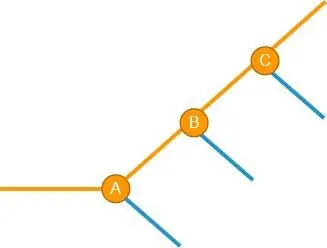
到这里，你可能已经发现一些规律了，似乎只要判断一个数据是来自哪些破坏性之后，就可以彻底解决破坏性问题了。
真的是这样吗？思考一下，破坏性变更 B 在处理破坏性 A 之前产生的数据（图中蓝色分支）时，它的判断条件和在破坏性 A 之后产生的数据（图中橙色分支）的判断条件是一样的吗？答案是：在蓝色和橙色分支下的判断逻辑很有可能是不同的！

甚至，破坏性 B 在蓝色分支下是否还存在都是一个疑问。同理，在橙色分支下没有破坏性的修改，在蓝色分支下是否依然没有破坏性，也是一个疑问。
基于这两个疑问，我们可以这样认为，上图中的Ｂ和 B’实际上不是同一个破坏性，而是两个相互独立，互不相干的破坏性，因此，在引入的时间上，破坏性Ｂ和 B’也没有关联（有可能 B 早于 B’发生，反之亦然）。所以上面这个图需要做一些修改才能更贴近实际情况：
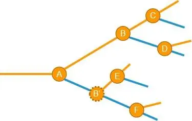
看到这里，你是否觉得这个问题一下子就变得非常难了。第一个破坏性出现时，用一个 if else 就可以搞定了（2 个情况），当第二个出现时，判断逻辑就有了 2 个条件（4 个情况），第三个破坏性出现时，判断逻辑就有了 3 个条件（8 个情况）。这个负担是随着破坏性个数为幂爆炸式增长的，大量使用 if else 是无法解决问题的。
先别气馁，根据前文的分析，虽然图中的蓝色和橙色分支发生破坏性的时机和判断方式没有必然的关联，但这一点反而带来了好消息，我们不难得到这样的推论：蓝色和橙色这两种情况的处理方法却是等效的。也就是说，假设有一个方法可以妥善处理橙色分支的破坏性，那么这个方法也可以直接应用到蓝色分支上，从而解决蓝色分支上的破坏性问题。
这就是解决问题的突破口，但此时我们还无法继续展开。在介绍新方案之前，我们还有一个重要的事情要做，那就是标记破坏性变更。
之所以我们要先对破坏性变更做标记，是因为我们在拿到任意一份用户数据时，需要通过标记快速找到这份数据里已经包含了哪些破坏性变更，这样才能想办法将它们逐个妥善解决。反之，如果不先做标记，在拿到一份用户数据时，我们就必须编写大量的 if else 逻辑来检测这份数据包含了哪些破坏性变更，根据前面的分析过程，这是不可行的。
标记破坏性变更
破坏性的引入显然与时间有关。所以，我们在这个图上引入一个时间维度，会有助于解决问题，我们再把各个破坏性投影到时间轴上，得到这样一个图：
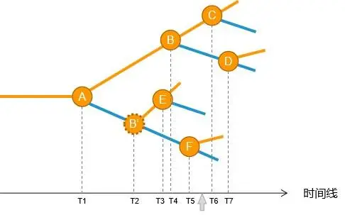
看起来，我们可以使用时间戳来标记破坏性。这里的关键是，在拿到任何一份应用数据之后，如果能知道这份应用数据是啥时候生成的（如图中的灰色箭头），再与这个时间戳做一下比对，我们很容易就可以知道这份应用数据已经包含了哪些破坏性变更，未包含哪些破坏性变更了。
但是，时间戳并不是完美的解决方案，一份代码只要没有修改，那么、在任何时候，基于这些代码所构建的版本做出的破坏性的标记，也必然是没有变化的，但是在不同时刻进行构建，时间戳却是不一样的，这就产生了矛盾。
那么，有没有一种具有时间戳的优点，又能避开它缺点的方法呢？
我们会很自然地想到低代码平台的版本号。首先版本号随时间递增的性质与时间戳相似，其次，如果代码不做任何修改，版本号也就不会改变，这个特性就可以绕过使用时间戳的短板了。
但其实版本号也不是解决这个问题的完美解决方案，使用版本号来标记破坏性变更，会有一个小副作用：一旦某个修改带有破坏性，就必须基于该修改发布一个新版本。但是软件的版本号一般是有规划的，随意发布版本有时候并不可行。
不过，要解决这个问题也不难，我们可以定义一个内部版本号，与对外发布的版本号分开就可以了。这个内部的版本号可以使用一个递增的数字就够了，每构建一次就 +1，无需设计得太复杂。有许多软件的研发过程，天然就会有内部构建号，此时我们可以直接使用内部构建号来标记破坏性变更。比如我正在用的 Windows 的内部版本号是：
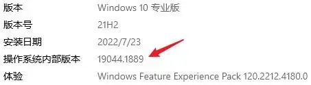
再如我正在用的 Sublime，也有类似机制，左侧的是对外的版本号，右侧是它的内部构建号：
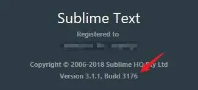
不过，在我们的低代码平台 Awade 里，我们并没有采用内部版本号，而是直接使用正式版本号来标记破坏性变更。因为对一个在线软件来说，它的版本号实际上并不重要，开发者任何时候刷新浏览器都有可能拿到新版本，所以大家并不关注版本号是多少。
如何解决破坏性？
好了，有了前面的铺垫，我们现在终于可以给出解决方案了，核心思想就是化整为零。这时我们再看下前面那张图：
这张图看上去会这么复杂，就是因为当第一个破坏性变更出现的时候，我们对它置之不理导致的。如果每出现一个破坏性，我们都立即进行版本的一致性处理，那么这张图上的情况就不会出现了。
具体做法是这样的：每当出现一个破坏性变更的时候，我们都配套给它编写一个处理器，这个处理器的作用是消除掉这一个破坏性。这里关键是破坏性变更对应的处理器的实现，处理器的输入是变更前的用户数据，处理器的输出是将用户数据调整为符合破坏性变更后的数据格式。这样说比较抽象，我们通过下面这张图来进一步解释。
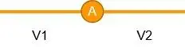
和前面其他图一样，圆圈 A 代表一个破坏性。不难理解：只有在当用户数据是版本 V1 时，破坏性 A 才存在，当用户数据是 V2 时，破坏性 A 对这份数据来说是不存在的，这一点非常重要。而前面我们说过，我们会给破坏性 A 配套编写一个处理器，这个处理器的作用，就是需要将格式为 V1 的用户数据，升级为 V2 格式的用户数据。所以，对于破坏性 A 的处理器，它的输入是 V1 格式的数据，输出是 V2 格式的数据。
当有新的破坏性出现的时候，我们重复这个过程，就可以实现从 V2 升级到 V3，V3 升级到 V4 了：
每一个处理器都只要关注处理一个破坏性，而无需关注其他破坏性，一个破坏性的内容是确定的，因此处理逻辑也是确定的，因此很容易将一个处理器做得非常健壮。
不过，不同的用户数据的有可能是在不同时间使用不同版本号的低代码编辑器来创建的，这意味着不同的用户数据可能会有不同的版本号。比如下图的灰色箭头，代表着某一笔用户数据创建的时刻：
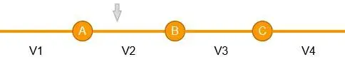
显然，在箭头左边的破坏性对他来说是没有影响的，但右侧的 B/C 破坏性是有影响的。所以，对于这笔用户数据，我们需要按照顺序，依次执行破坏性 B 的处理器，再执行破坏性 C 的处理器，这样，这笔用户数据就可以被稳妥地升级到最新版本了。
通过这个方法，我们就可以做到将任意老的用户数据，稳妥、可靠地升级到最新版了，这就是化整为零的含义。所以，一个多年前做了最后一次编辑的应用工程，即使在这么长时间内低代码平台不断迭代，引入任意数量的破坏性变更，但这个应用工程也可以随时被打开再次编辑。
有了通用的解决思路后，我们再针对前面说过的三类最常见的破坏性变更，具体分析下各个类型的破坏性变更如何处理。
Schema 数据结构的变更
我们先来看 Schema 数据结构的变更造成的破坏性，案例如下：
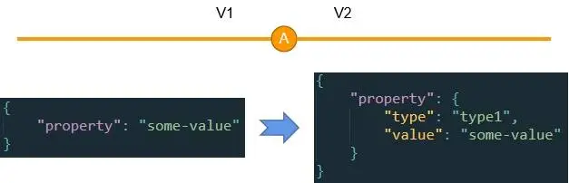
这是典型的迭代过程产生的破坏性的例子。一开始某个属性是一个简单值，后来扩展为一个复杂的对象。如果不采用处理器来做一致性处理，那么所有使用这个属性的代码都必须要永久做 if else：
if (typeof v.property == 'string') {
...
} else {
...
}
但如果采用这一讲的方法，我们只需要在处理器里直接把 property 属性的结构从字符串扩展为一个对象即可，处理的过程需要给 type 只设置一个当前的默认值就好了。
我们再来看另一个例子：
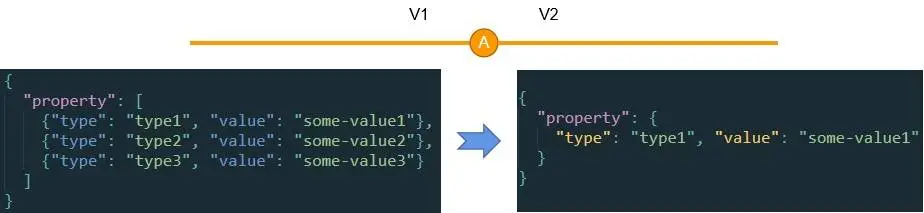
这里，某个功能在迭代的过程被简化或者裁剪，把 type2 和 type3 都裁剪掉了，只留 type1，且 property 的值的结构也随着被简化。在这个情况下，处理器就可以直接把结构简化，这样 V2 及以后的代码就可以“忘记”property 属性曾经是一个数组了。
Schema 数据结构的变更可以举的例子非常多，但基本大同小异，要么就是结构变复杂了，要么就是结构变简单了。实际上，任意的结构调整，都是可以采用处理器来完成一致性处理，从而使得使用对应数据的代码无需 if else，从而大大简化代码。
模板文件的变更
随着低代码平台的演进，模板文件内容发生变化是很正常的，比如前文的 index.html 的例子，有可能会增加新的脚本引入语句：
<!DOCTYPE html>
<html>
<head>
<title>${title}</title>
<script type="text/javascript" src="${scriptHref}"></script>
<!-- 增加了这一行 -->
<script type="text/javascript" src="${newHref}"></script>
<link rel="stylesheet" type="text/css" href="${cssHref}">
</head>
<body>
${someContent}
</body>
</html>
处理器消除这样的破坏性变更就更简单了。对这类问题，基本都是只要把新的模板拷贝到对应位置去即可。当然，这类破坏性变更往往会伴随着前面介绍的“Schema 数据结构的变更”，此时，一个处理器里，就需要同时处理多种不同类型的破坏性类型了。
外部破坏性变更
在 Pro Code 纯代码开发模式下，外部破坏性问题只能手工解决，但在低代码平台，多数情况下，我们也可以做到悄无声息地把外部破坏性变更给解决掉。
比如低代码平台所依赖的按钮组件的 API 出现了破坏性变更，按钮的文本从原来的 text 改为了 label：
<!-- 原来的用法 -->
<jigsaw-button text="这是一个按钮"></jigsaw-button>
<!-- 现在的用法 -->
<jigsaw-button label="这是一个按钮"></jigsaw-button>
在收到强制变更说明之后，我们只要为此开发一个处理器，找到 App 里所有带有 text 属性的按钮，并自动将属性名从 text 改为 label 即可。
注意，虽然这种破坏性是在组件，但实际应该修改的是 App 的 Schema 数据。这其实非常好理解，对低代码平台来说，App 的 Schema 数据就是它的源码，低代码平台在消除外部破坏性所做的动作与纯代码所要做的动作相似，都是需要修改各自模式下的源码。
这个例子比较简单，但无论再怎么复杂的第三方库的破坏性的处理，都是类似的思路和做法。比如，你需要写一个升级器将 App 使用的 Vue 从 2.x 升级到 3.x，这是一个复杂的过程，但思路和这个例子一致：先实验或者阅读破坏性变更说明书了解到需要手工做哪些调整，然后找到 App 的 Schema 数据里的对应位置，做相应调整。
我用这个方法自动将 Angular（这是我在用的技术栈）从 4.x 升级到 8.x，后来又从 8.x 升级到现在的 9.x 版。Angular 的大版本升级更加麻烦，Webpack、Typescript、RXJS 等各种第三方库也要一起调整，但这个方法在两次升级过程中都表现得很好。
服务端 API 的破坏性变更是家常便饭，特别是第三方数据源的破坏性变更，非常不可控。这类破坏性变更的处理方式与前端第三方库的解决方式如出一辙。比如一个 Rest 服务返回的数据结构，以前的结构是一个二维数组：
[
[11, 12, 13, 14],
[21, 22, 23, 24],
[31, 32, 33, 34],
[41, 42, 43, 44]
]
某天突然发生变化了，变成了：
{
header: ['Header1', 'Header2', 'Header3', 'Header4'],
data: [
[11, 12, 13, 14],
[21, 22, 23, 24],
[31, 32, 33, 34],
[41, 42, 43, 44]
]
}
你看，这里的结构改成了一个 json 对象，且增加了 header 属性，原来的数据被挪到 data 属性中了。编写处理器处理这样的变更，方法和前面介绍的例子别无二致，直接在 App 的 Schema 里筛选出所有使用到这个服务的地方，把处理的逻辑做一些调整即可。
那么，有没有确实无法解决的破坏性问题呢？
有的，在我们研发低代码平台的几年里，曾碰到过三四次这样的情况。比如最初的一次是我们重写了编辑器的底层逻辑，导致老版本的 Schema 相比新的 Schema 缺少了非常多的属性，我们尝试一一给出经验值，但效果仍达不到预期。
再如最近的一次是因为 UX 设计规范有大幅调整，引入了大量的 CSS 方面的破坏性，由于细节太多，几乎不可能枚举完整，我们把能想到的细节都一一用处理器消除了，但实践表明，依然有 30% 左右的 CSS 细节泄露出去了。
对于这类破坏性，我们采用的解决方法简单粗暴：升级大版本，并对外宣布这个破坏性无解，需要手工处理（我们会给出详细的处理方法，以及配置专人协助升级），一般在低代码平台做重大版本升级时，会采用这个方法。但这样做需要非常谨慎，要尽量避免，并且要与各个应用团队达成共识。
小结
根据我的经验，常见的破坏性变更有 Schema 数据结构的变更、模板文件的变更、外部破坏性变更等，这几个类型基本占据了我碰到的破坏性变更总数的 90% 左右。
虽然单个破坏性变更所产生的负面影响（兼容性问题）一般很有限，但兼容性问题也很麻烦，其他难度再高的技术问题，都是一时的，解决了就解决了，兼容性问题最大的难点在于它产生的负担会随着时间不断累积。这一讲前面的这个图，可以很好地说明这一点：
任何一个破坏性都会导致处理用户数据的逻辑产生分叉，每一个分叉则有可能使得之前已有的判断逻辑翻倍，最终导致判断逻辑复杂到再也无法修改的境地。
根据我的经验，大概平均每 40~60 个修改会引入一个破坏性，一年能累计 20~30 个破坏性变更。所以如果没有一个有效的方法来妥善解决兼容性问题，任何团队都将迟早被它压垮。最直观的表现是代码没人敢改，没人知道为啥正确，也没人知道为啥出错。
这一讲给出的办法是，将兼容性问题化整为零来处理，每个破坏性变更的发现，都必须开发一个配套的处理器，用于将兼容性发生前的用户数据升级为兼容性发生之后的格式，这样就可以及时地处理掉破坏性。而且，更关键的是，一个处理器与一个破坏性修改是配套的，因此处理器只需要专注于处理 1 个破坏性即可，这就可以让处理器的实现足够简单，足够健壮，足够好维护。
要妥善解决破坏性问题的前提是需要能及时、稳妥地发现它们，这不只是一个技术问题，需要技术 + 管理两个手段双管齐下，无所不用其极地从各个角度采用各种形式来发现，具体的经验我一讲总结在了上一讲里了，希望你能回顾一下上一讲，并结合自身团队的经验，总结一套适合自身的发现破坏性问题的方法论。
思考题
你曾经碰到过的印象最深的兼容性问题是啥？它造成了啥后果？最终又是如何被解决的？
欢迎在评论区里留下你的故事。我们下一讲再见。
© 2019 - 2023 Liangliang Lee. Powered by gin and hexo-theme-book.